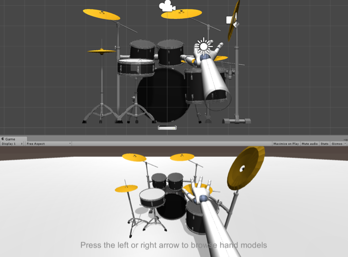

Final Design
We will explain our final design in different modules. (1) Software interface, (2) modified gloves, (3) kick pedal.
Software Interface
The software interface is essentially shown in the Concept Description section. However, we might not do the "customize your drum set" feature. Also, the tutorial mode not not feature a drum score; instead, we would just highlight the current and next drums that the user should hit and score their accuracy afterwards.
Below, we are showing a picture of what the software currently looks like. We are using the Unity game engine to develop our software interface because it is quite a universal game development software and has great capabilities with our LEAP motion sensor. In the graph shown below, we can make a specified sound when a hand enters the region of a drum. At the meantime, we can detect the velocity it enters the region at, therefore allowing us to adjust the volume. We already have three LEAP motion sensors, and we have obtained the model and audio files already.

Modified Gloves
It is rather challenging to come up with a place to attach the accelerometer and the pager motors, because they would need at least seven wires, and it does not very pleasing to have that on the stick. So we decided to include a pair of gloves in our design, and we will attach the accelerometer and the pager motors to the back of the user's’ hands. Then, we can wire the PCB, which has the accelerometer and the pager motor, to an Arduino, that way we can communicate the acceleration data to the computer, and pass the “successful hit” message to the pager motor so it provides a haptic feedback. Here is a conceptual diagram:
On top of this wired design, we have ordered some wireless controllers so that the user can move their hands more freely. Wireless components tend to be more tricky to handle, so we would not treat this as a main goal.
Kick Pedal
Though weight and portability are of great importance, a pre-made pedal has been selected to shorten the design and build process. Future developmental goals consist of shortening the overall pedal to decrease the size and weight of the device, and choosing materials that will give the user control as well as durability.
For the purposes of the VPS, both position and velocity of the kick drum pedal are important: position of the pedal will denote when the kick drum is hit, while the angular velocity of the pedal will control volume. This will be accomplished using a linear potentiometer as a voltage divider. The potentiometer will be mounted such that the action of the pedal will cause a corresponding change in resistance. As the resistance changes, we will be able to measure a change in voltage and determine the angle of the kick pedal. Differentiating this data will give a rough estimate of velocity to be used to determine the volume of the corresponding sound.

Though weight and portability are of great importance, a pre-made pedal has been selected to shorten the design and build process. Future developmental goals consist of shortening the overall pedal to decrease the size and weight of the device, and choosing materials that will give the user control as well as durability.
For the purposes of the VPS, both position and velocity of the kick drum pedal are important: position of the pedal will denote when the kick drum is hit, while the angular velocity of the pedal will control volume. This will be accomplished using a linear potentiometer as a voltage divider. The potentiometer will be mounted such that the action of the pedal will cause a corresponding change in resistance. As the resistance changes, we will be able to measure a change in voltage and determine the angle of the kick pedal. Differentiating this data will give a rough estimate of velocity to be used to determine the volume of the corresponding sound.
For this project, an Arduino will function as an Analog to Digital Converter (ADC). The arduino can function as a 10 bit ADC, which over a range of 0 to 5 V gives a resolution of about 4.8 mV.
The resistance of the potentiometer will change in a way that is proportional to the movement of the slider (Resistance is $R = \frac{\rho l}{A}$, $l$ is length, $\rho$ resistivity, and $A$ cross sectional area). Figure X(a) can be equated to Figure X(b) for any position of the slider, where $ R1 + R2 = 10 k\Omega$. The voltage output to the ADC can be computed as:
$$V_{ADC} = (5V) \frac{R2}{R1+R2} = (5V) \frac{R2}{10 k\Omega}$$
As can be seen in the equation above, the output voltage is also proportional to the movement of the slider. The position of the kick pedal can be determined once at least two known points are determined. In fact, this is very similar to what we did in Lab 3.